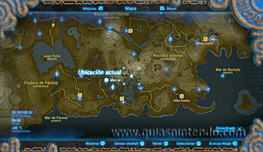
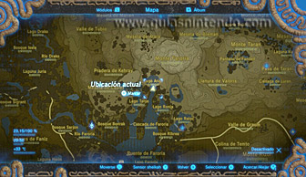
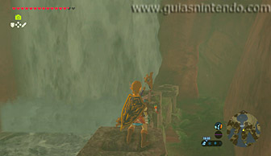
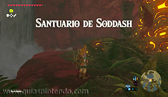
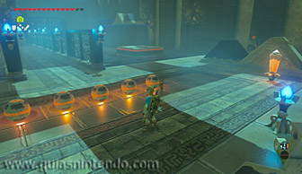
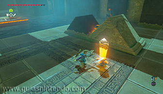
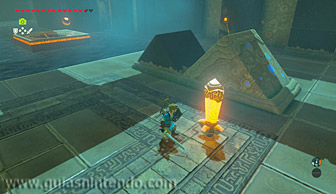
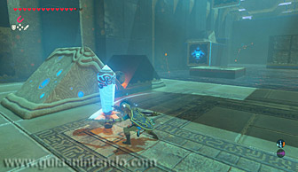
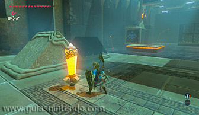
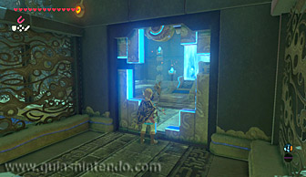

Este santuario se encuentra en la región de la torre de Farone, tras una cascada que hay al sur del lago Ariol ubicado al nordeste de dicha torre.

Al este de dicha cascada hay una cueva que te lleva tras ella, lugar donde encontrarás el santuario.

Dentro del santuario encontrarás cinco esferas, y el objetivo es colocar dos de ellas en sendos pedestales anaranjados con la ayuda de dos grandes bloques de piedra móviles que empujarán todo aquello que tengan delante cuando golpees un cristal que hay a su lado.

Puesto que el pedestal de la derecha se moverá lateralmente, tendrás que calcular el momento en el que lanzar la esfera hacia el pedestal. El mejor momento para golpear el cristal es un poco antes de que la plataforma alcance el punto intermedio del recorrido que hace. De esa manera, harás aparecer un cofre que contiene 5 flechas de hielo.

Frente al pedestal de la izquierda habrá dos plataformas que se moverán verticalmente, por lo que deberás calcular el momento en el que lanzar la esfera hacia el pedestal. Coloca la esfera lo más a la derecha que puedas del gran bloque empujador y golpea el cristal cuando la plataforma de la derecha se encuentre en su punto más alto. De esa manera, harás aparecer un cofre que contiene una llave pequeña.

Finalmente, utiliza la llave para abrir la puerta que hay al final del pasillo central y así podrás llegar hasta el altar del santuario y obtener un símbolo de valía.
